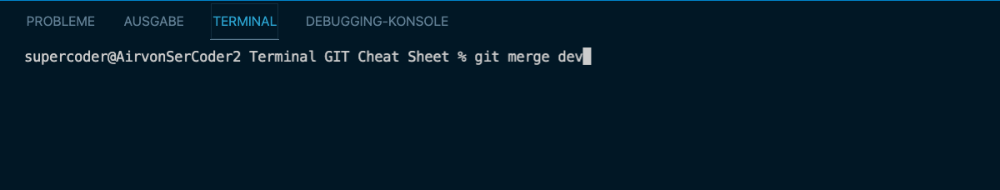

CONNECTION VS CODE MIT GIT
Lokales Git Repository erstellen
Über den Befehl "git init" wird im Terminal ein lokes Git Respository erstellt.

Daten für die Zwischenablage (Staged Area/Index) vobereiten
Über den Befehl "git add ." werden die Projektdaten für die Zischenablage vorbereitet. Wobei der "." dafür steht alle Daten zu erfassen.
Upload Message hinzufügen und Git Daten einfügen
Über den Befehl "git commit -m "Message" wird eine Message für den Upload hinzugefügt. Hier ist es wichtig eine sinnvolle Bezeichnung, wie bspw. First Upload, oder Update1, zu wählen.
Um das Git Respository mit dem lokalen Git Ordner zu verbinden, kopiert man bei Git die Verbindung und fügt sie im Terminal ein. Danach ist der erste Upload abgeschlossen.

Update des Git Respositories
Um ein Update des Git Respositories durchzuführen benötigt man lediglich die Schritte "git add .", "git commit -m "update" und zusätzlich "git push".
ANZEIGE BEFEHLE
Anzeige der bisheringen Commits
Über den Befehl "git log" kann man sich eine ausführliche Aufstellung aller bisherigen Commits anzeigen lassen. Der Befehl "git lot --oneline" zeigt die gekürzte Fassung.
Anzeige der erstellten Branches
Über den Befehl "git branch" kann man sich alle verwendeten Branches eines Projekts anzeigen lassen.
Weitere Befehle sind "git status" und "git diff". Beide geben Auskunft über Änderungen am Projekt.
BRANCHES
Über verschiedene Branches eines Projektes können mehrere Developer an einem Projekt gleichzeitig arbeiten. Die Rolle des Git Masters ist dabei sehr wichtig, da er später die Zusammenführung der verschiedenen Branches im Überblick haben muss.
Neue Branches erstellen
Über den Befehl "git branch "Branchname"" erstellt man im Terminal (und über Commit auch bei Git) neue Branches.

Branches löschen
Über den Befehl "git branch -d "Branchname"" wird der ausgewählte Branch undwiederruflich gelöscht. Mit Vorsicht zu verwenden.
Zwischen Branches wechseln
Über den Befehl "git checkout " wechselt man zwischen verschiedenen Branches. Die Grüne mit Sternchen ist dabei die, in der man sich befindet.
MERGE
Branches mergen
Ist die Entwicklung eines Branches abgeschlossen und ist dieser auch ausreichend getestet, kann er mit dem Main Branch wieder zusammengeführt werden. Dafür begibt man sich in den Main/Master Branch. Über den Befehl "git merge Branchname" wird dann der bearbeite Branch eingefügt.
KLONEN & HERUNTERLADEN
Git Projekt herunterladen
Über den Befehl "git pull Link" kann man ein Git Projekt in VS Code herunterladen. Dafür wird ein Link des Projekts von Git benötigt.

Git Projekt klonen
Über den Befehl "git clone Link" kann man ein Git Projekt in VS Code klonen. Dafür wird ebenfalls ein Link des Projekts von Git benötigt.